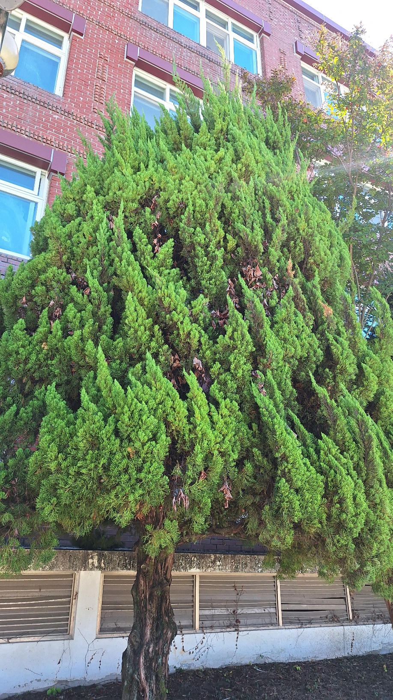
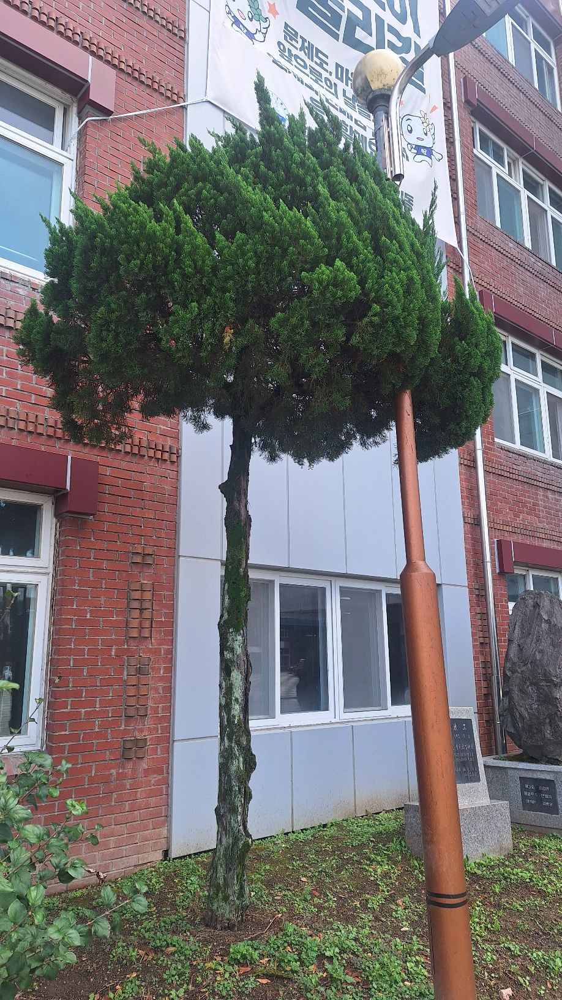
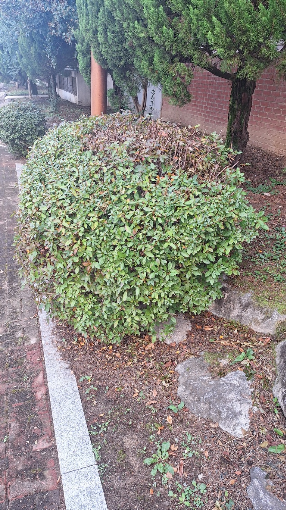

성광고등학교의 여러 식물들
(가이즈까 향나무 · 눈향나무 · 영산홍 등)
그 식물들은 얼마나 많은 이산화탄소를 흡수할까?
학교 내의 여러 식물들

가이즈까 향나무
학명: Juniperus chinensis 'Kaizuka'
분류: 측백나무과 향나무속
원산: 중국 등 동아시아 지역의 향나무를 바탕으로 한 원예 품종
형태: 상록 침엽수
특징: 가지가 비틀리듯 자라며, 잎은 비늘 모양 또는 바늘 모양이다.
생육 환경: 햇빛이 잘 들고 배수가 양호한 곳
활용: 정원수, 공원수, 조경수
가이즈까 향나무의 이산화탄소 흡수량 (CO₂)
가이즈까 향나무의 총 탄소 격리량은 1.2lb라고 한다.
이 수치를 이용해 연간 이산화탄소 흡수량을 환산하면 다음과 같다.
1.2 × 0.453592 = 0.5443kg C/년
CO₂의 분자량은 44, 탄소(C)의 원자량은 12이므로,
탄소 질량을 CO₂ 질량으로 환산하기 위해 44/12를 곱한다.
0.5443 × (44/12) = 1.996kg CO₂/년
따라서 가이즈까 향나무 한 그루의 연간 CO₂ 흡수량은
약 2.0kg CO₂/년으로 환산된다.
자동차의 연간 이산화탄소 배출량
자동차는 연간 약 15,000km를 주행하며, 약 2,400kg CO₂/년의 이산화탄소를 배출한다.
또한 자동차는 1km당 약 162g의 이산화탄소를 배출한다.
자동차의 연간 이산화탄소 배출량 계산
연간 주행거리 × 1km당 이산화탄소 배출량
15,000km × 162g CO₂/km = 2,430,000g CO₂/년
2,430,000 ÷ 1,000 = 2,430kg CO₂/년
따라서 자동차는 연간 약 2,400kg의 이산화탄소를 배출한다.
가이즈까 향나무와 자동차의 비교
앞서 계산한 가이즈까 향나무 한 그루의 연간 이산화탄소 흡수량은 약 2.0kg CO₂/년이다.
자동차의 연간 배출량을 향나무 한 그루의 연간 흡수량으로 나누면 다음과 같다.
2,400 ÷ 2.0 = 1,200
즉, 자동차 한 대가 1년 동안 배출하는 이산화탄소의 양은 가이즈까 향나무 약 1,200그루가 1년 동안 흡수하는 양과 같다.
이를 통해 자동차의 연간 이산화탄소 배출량이 상당히 많으며, 나무의 이산화탄소 흡수 기능이 환경 보호에 중요하다는 점을 알 수 있다.

눈향나무
분류: 측백나무과 향나무속 상록 침엽수
형태: 줄기가 땅을 따라 낮게 자라는 관목
높이: 일반적으로 낮게 자라며, 품종과 생육 환경에 따라 차이가 있음
잎: 바늘 모양 또는 비늘 모양의 잎
열매: 구과로, 익으면 검푸른색을 띠는 편
생육 환경: 햇빛이 잘 들고 배수가 양호한 곳
주요 용도: 정원, 암석원, 지피식재 및 조경용
눈향나무의 이산화탄소 흡수량 - 한라산 아고산대 군락
2014년에는 이 군락에서 2.02t CO₂/ha/년만큼의
이산화탄소를 흡수하였고,
-5.02t CO₂/ha/년만큼의 이산화탄소를 배출하였다.
2015년에는 이 군락에서 3.52t CO₂/ha/년만큼의
이산화탄소를 흡수하였고,
-4.58t CO₂/ha/년만큼의 이산화탄소를 배출하였다.

영산홍
분류: 진달래과 진달래속
형태: 키가 작은 상록성 관목
꽃: 주로 붉은색이나 분홍색이며, 봄에 개화
잎: 작고 타원형이며, 겨울에도 일부 잎이 남음
생육 환경: 햇빛이 잘 들고 배수가 양호한 곳
주요 용도: 학교 화단, 공원, 정원 등의 조경 및 관상용
영산홍의 연간 이산화탄소 흡수량
영산홍의 개체당 연간 이산화탄소 흡수량은 직접적으로 보고되지 않았다.